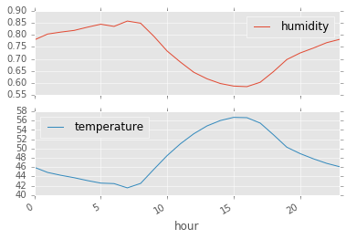
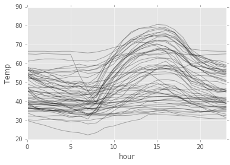

import pandas as pd
import matplotlib.pyplot as plt
plt.style.use('ggplot')
%matplotlib inlineAggregation in Timeseries using Pandas
We’ve all grown up studying groupy by and aggregations in SQL. Pandas provides excellent functionality for group by and aggregations. However, for time series data, we need a bit of manipulation. In this post, I’ll take a small example of weather time series data.
df = pd.read_csv("weather.csv", index_col=0, parse_dates=True).tz_localize("UTC").tz_convert("US/Central")df.head()| humidity | temperature | |
|---|---|---|
| 2015-01-01 00:00:00-06:00 | 0.73 | 38.74 |
| 2015-01-01 01:00:00-06:00 | 0.74 | 38.56 |
| 2015-01-01 02:00:00-06:00 | 0.75 | 38.56 |
| 2015-01-01 03:00:00-06:00 | 0.79 | 37.97 |
| 2015-01-01 04:00:00-06:00 | 0.80 | 37.78 |
Question 1: What is the mean temperature and humidity per hour of the day?
We’ll create a new column in the df containing the hour information from the index.
df["hour"] = df.index.hourdf.head()| humidity | temperature | hour | |
|---|---|---|---|
| 2015-01-01 00:00:00-06:00 | 0.73 | 38.74 | 0 |
| 2015-01-01 01:00:00-06:00 | 0.74 | 38.56 | 1 |
| 2015-01-01 02:00:00-06:00 | 0.75 | 38.56 | 2 |
| 2015-01-01 03:00:00-06:00 | 0.79 | 37.97 | 3 |
| 2015-01-01 04:00:00-06:00 | 0.80 | 37.78 | 4 |
mean_temp_humidity = df.groupby("hour").mean()
mean_temp_humidity.head()| humidity | temperature | |
|---|---|---|
| hour | ||
| 0 | 0.779322 | 45.976441 |
| 1 | 0.803898 | 44.859492 |
| 2 | 0.812203 | 44.244407 |
| 3 | 0.819153 | 43.724068 |
| 4 | 0.832712 | 43.105763 |
mean_temp_humidity.plot(subplots=True);
We can use pivoting to achieve the same dataframe.
mean_temp_humidity_pivoting = pd.pivot_table(df, index=["hour"], values=["temperature", "humidity"])mean_temp_humidity_pivoting.head()| humidity | temperature | |
|---|---|---|
| hour | ||
| 0 | 0.779322 | 45.976441 |
| 1 | 0.803898 | 44.859492 |
| 2 | 0.812203 | 44.244407 |
| 3 | 0.819153 | 43.724068 |
| 4 | 0.832712 | 43.105763 |
By default the aggregation function used in pivoting is mean.
Question 2: Can we plot the daily variation in temperature per hour of the day?
For this, we want to have a dataframe with hour of day as the index and the different days as the different columns.
df["day"] = df.index.dayofyeardf.head()| humidity | temperature | hour | day | |
|---|---|---|---|---|
| 2015-01-01 00:00:00-06:00 | 0.73 | 38.74 | 0 | 1 |
| 2015-01-01 01:00:00-06:00 | 0.74 | 38.56 | 1 | 1 |
| 2015-01-01 02:00:00-06:00 | 0.75 | 38.56 | 2 | 1 |
| 2015-01-01 03:00:00-06:00 | 0.79 | 37.97 | 3 | 1 |
| 2015-01-01 04:00:00-06:00 | 0.80 | 37.78 | 4 | 1 |
daily_temp = pd.pivot_table(df, index=["hour"], columns=["day"], values=["temperature"])daily_temp.head()| temperature | |||||||||||||||||||||
|---|---|---|---|---|---|---|---|---|---|---|---|---|---|---|---|---|---|---|---|---|---|
| day | 1 | 2 | 3 | 4 | 5 | 6 | 7 | 8 | 9 | 10 | ... | 50 | 51 | 52 | 53 | 54 | 55 | 56 | 57 | 58 | 59 |
| hour | |||||||||||||||||||||
| 0 | 38.74 | 39.94 | 39.57 | 41.83 | 33.95 | 36.98 | 46.93 | 29.95 | 36.57 | 36.19 | ... | 46.17 | 54.01 | 66.57 | 55.49 | 37.68 | 30.34 | 34.97 | 39.93 | 36.19 | 32.25 |
| 1 | 38.56 | 39.76 | 39.75 | 40.85 | 32.29 | 35.89 | 45.33 | 28.55 | 37.31 | 36.40 | ... | 41.38 | 54.56 | 66.57 | 55.49 | 36.76 | 30.04 | 34.97 | 36.37 | 36.38 | 32.25 |
| 2 | 38.56 | 39.58 | 39.94 | 39.73 | 31.59 | 36.44 | 44.51 | 27.44 | 37.78 | 36.59 | ... | 39.99 | 55.81 | 66.57 | 55.34 | 35.56 | 30.57 | 34.75 | 34.74 | 36.20 | 32.25 |
| 3 | 37.97 | 38.83 | 40.16 | 38.78 | 30.48 | 36.85 | 43.92 | 25.97 | 37.97 | 36.38 | ... | 39.05 | 57.14 | 66.38 | 55.27 | 34.94 | 30.59 | 35.15 | 34.31 | 36.20 | 32.52 |
| 4 | 37.78 | 39.02 | 40.65 | 39.74 | 29.89 | 35.72 | 44.37 | 24.74 | 37.82 | 35.49 | ... | 37.99 | 57.51 | 66.57 | 55.49 | 34.04 | 30.38 | 35.15 | 33.02 | 34.49 | 32.52 |
5 rows × 59 columns
daily_temp.plot(style='k-', alpha=0.3, legend=False)
plt.ylabel("Temp");
So, we can see some pattern up there! Around 15 hours, the temperature usually peaks.
There you go! Some recipes for aggregation and plotting of time series data.